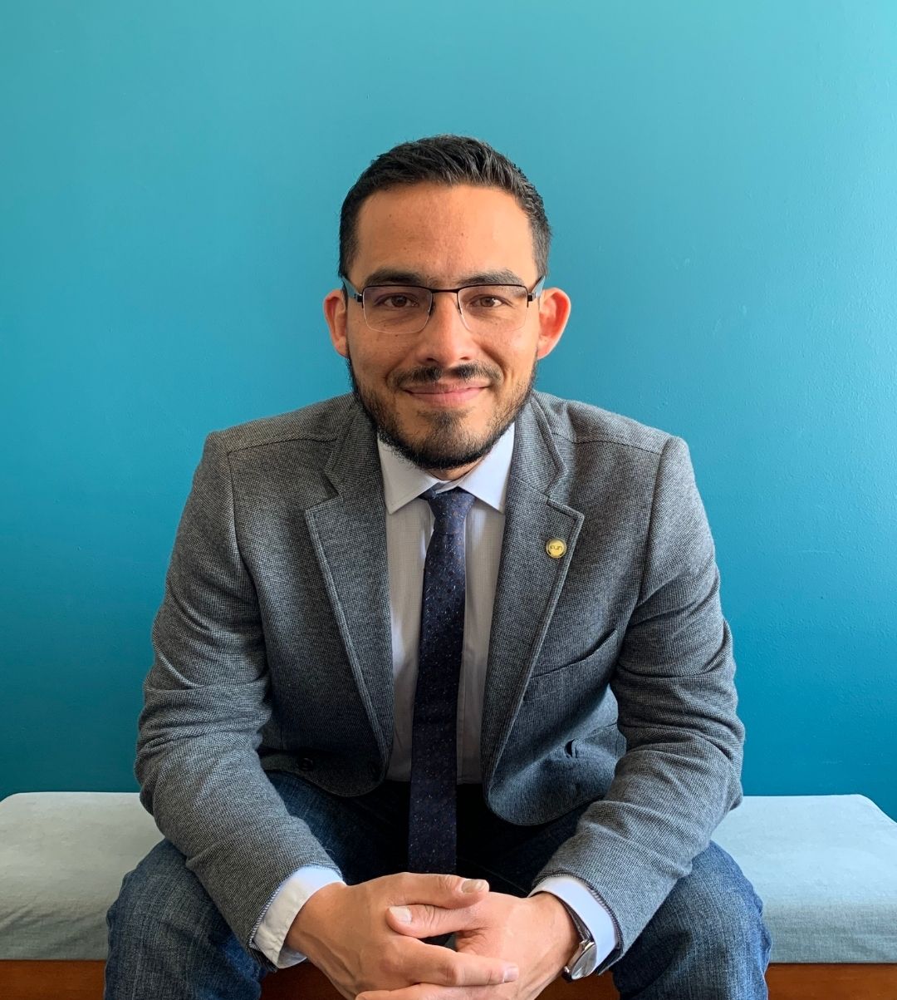

|  |
Esteban Ardila SilvaMédico internista de la Pontificia Universidad Javeriana |
| Fecha | Trabajo |
|---|---|
| Desde 2021 | Internista UCI, Hospital Universitario San Ignacio |
| Desde 2021 | Internista UCI, Clínica Red Humana |
| 2020-2021 | Especialista apoyo UCI, Clínica Santa María del Lago (Valmeri) |
| 2019-2021 | Especialista apoyo UCI, Fundación Hospital San Carlos |
| 2019-2020 | Especialista apoyo consulta externa, Darsalud IPS |
Trabajé como médico general durante 6 años y tuve muchos trabajos en diferentes áreas. Ya como especialista la gente omite el historial de trabajo de médico general porque no cuenta como "experiencia laboral". Sin embargo, esos trabajos me dejaron muchísimos aprendizajes, como médico y como persona. Si estás interesado, te dejo una "Narrativa laboral como médico general"
| Trabajo en equipo | 🎖️🎖️🎖️🎖️ | Escritura | 🎖️🎖️🎖️🎖️ | Diseño Web | 🎖️🎖️ |
| Coaching emocional | 🎖🎖🎖🎖 | Bases de datos | 🎖🎖 | ||
| Gestión proyectos | 🎖🎖🎖 | ||||
| Educación continuada | 🎖🎖🎖🎖 |